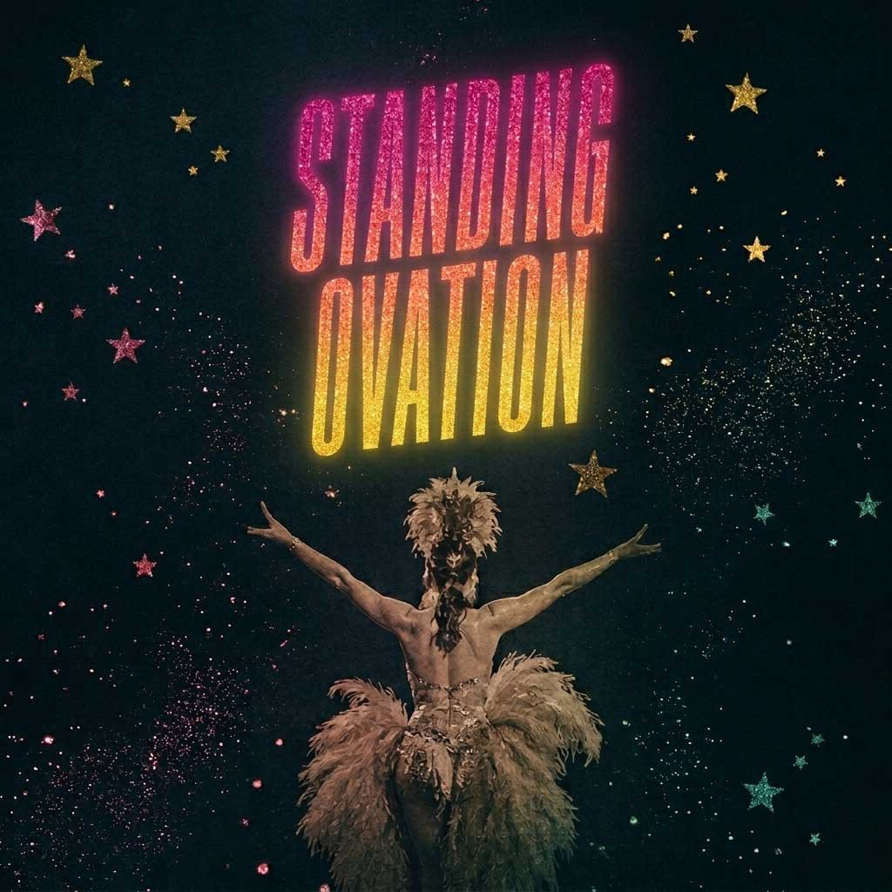
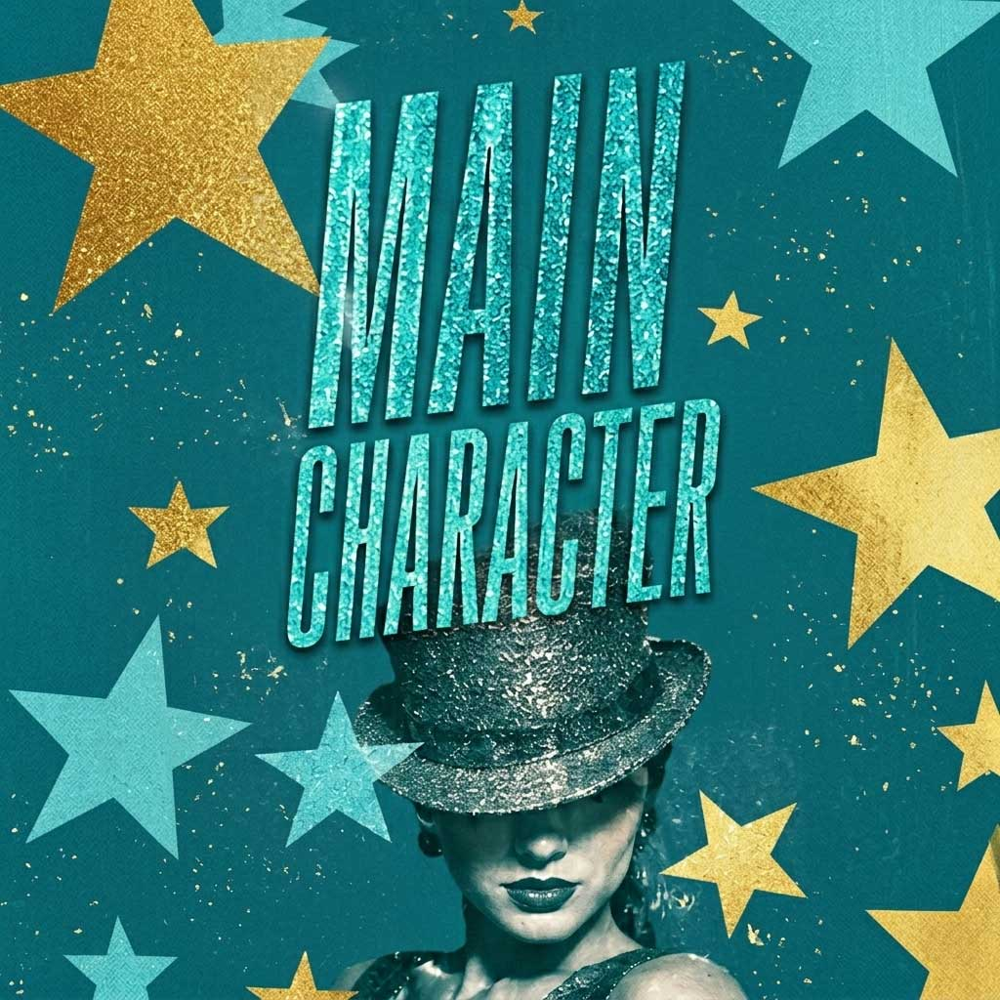
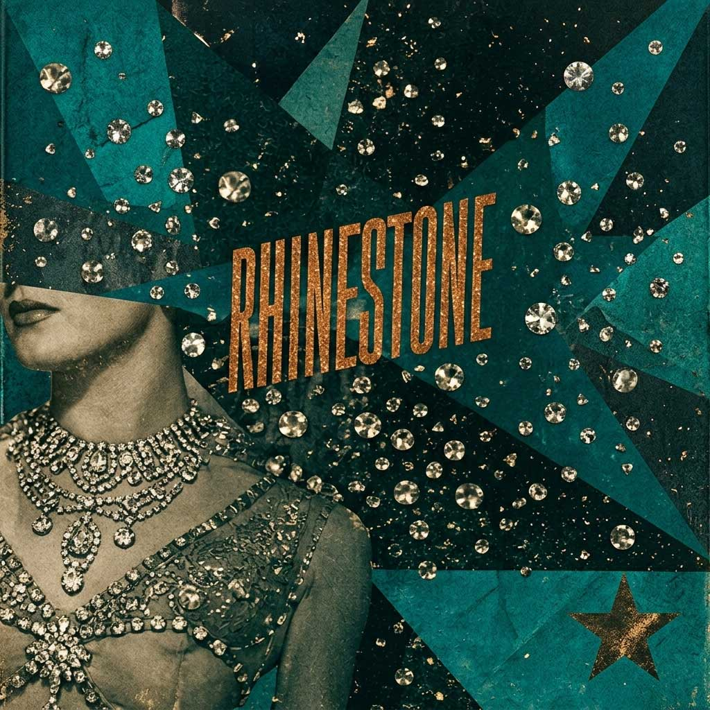
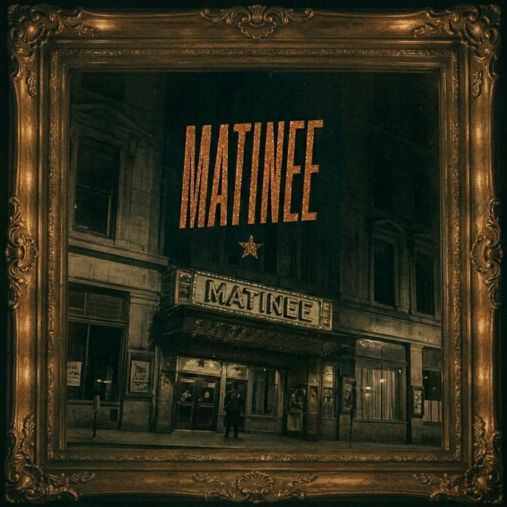
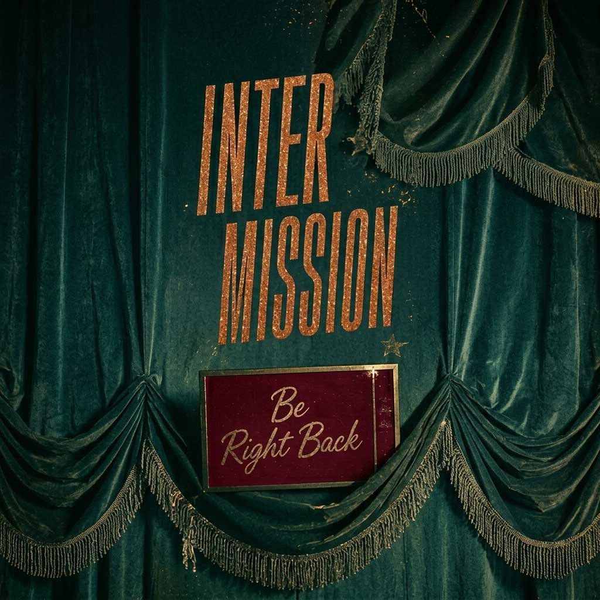
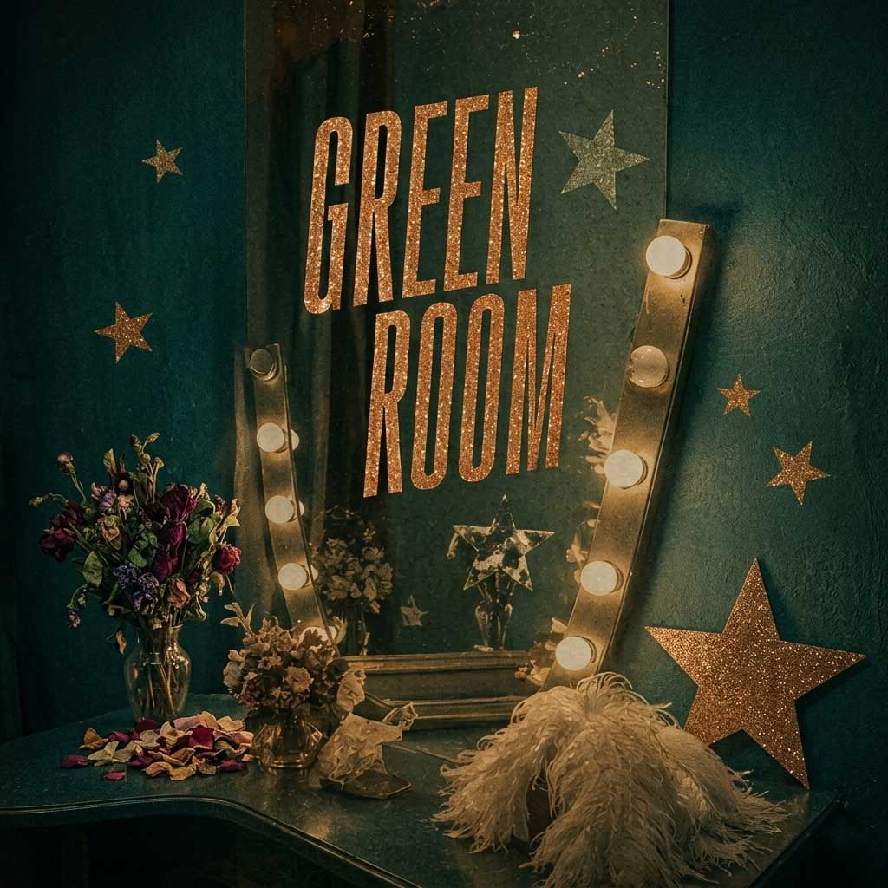
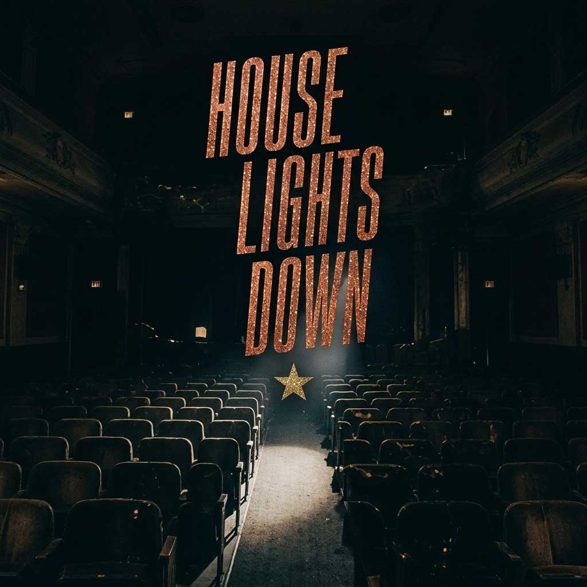
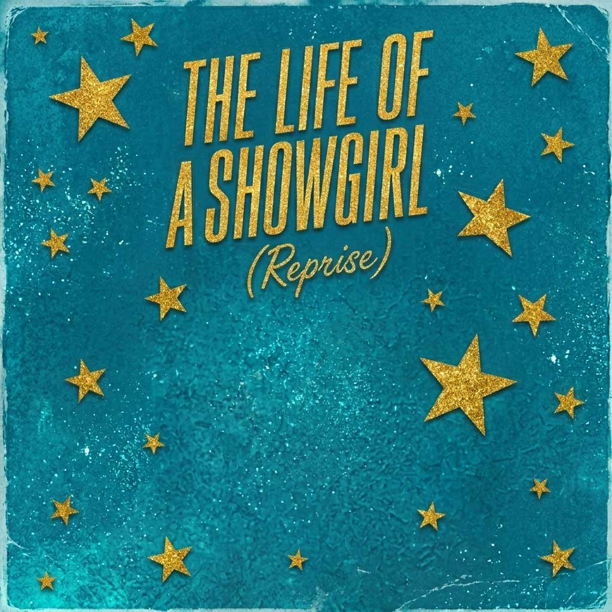
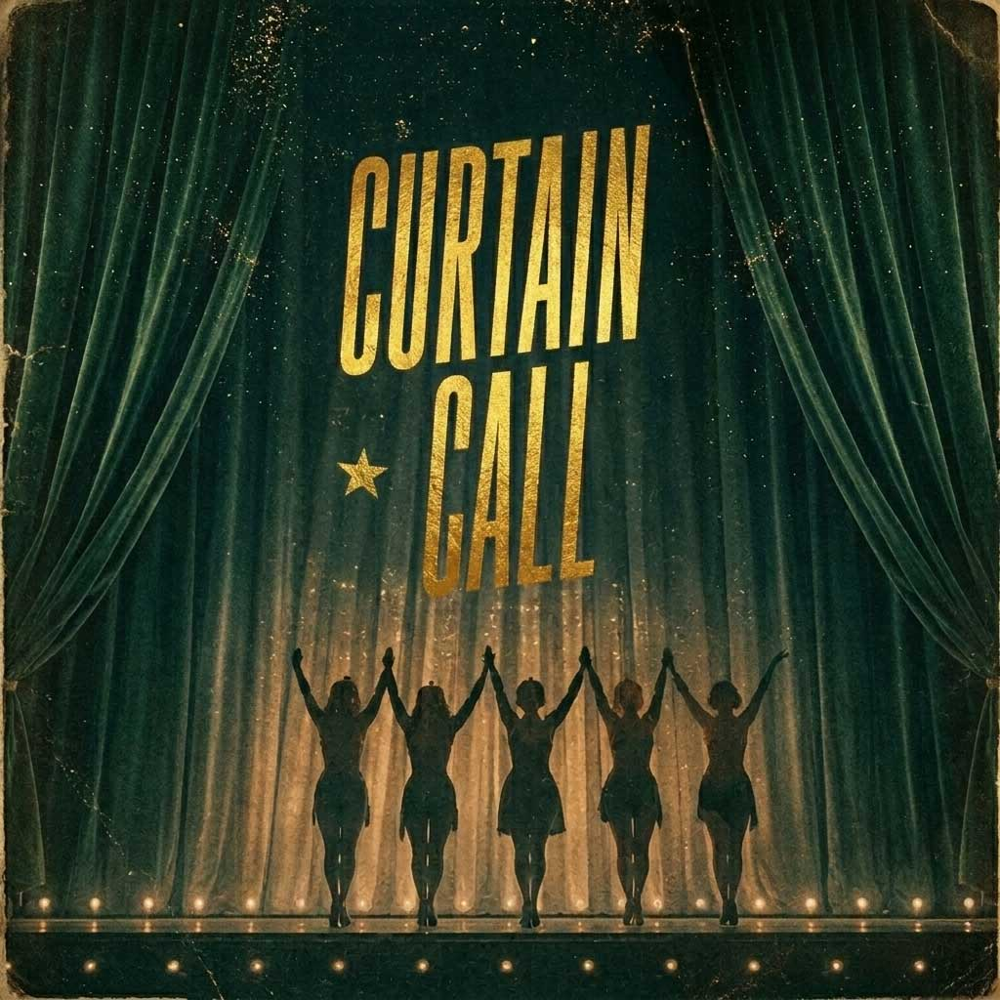

The ones that almost made it.
Original creative writing — not affiliated with Taylor Swift.
These songs don't exist. :(
Read the full (brief) history ↗









Imagined vault track · The Life of a Showgirl · Original creative writing
Imagined vault track · The Life of a Showgirl · Original creative writing
Imagined vault track · The Life of a Showgirl · Original creative writing
Imagined vault track · The Life of a Showgirl · Original creative writing
Imagined vault track · The Life of a Showgirl · Original creative writing · Any resemblance to real feuds is entirely the point and also entirely deniable
Imagined vault track · The Life of a Showgirl · Original creative writing
Imagined vault track · The Life of a Showgirl · Original creative writing · Olivia Rodrigo has no connection to this project. This is fan fiction.
Imagined vault track · The Life of a Showgirl · Original creative writing
Imagined vault track · The Life of a Showgirl · Original creative writing · These songs don't exist. The feeling that they should is the whole point.
Imagined vault track · The Life of a Showgirl · Original creative writing